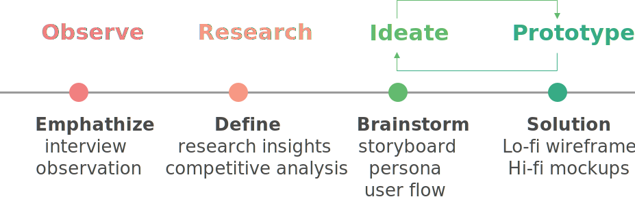

DRAW WITH BRUSHY
UI/UX Design
UI/UX Design
Draw With Brushy is an educational game that teaches preschool children to learn about how to draw, practice hand-eye coordination movements, and communication through finger drawing on tablet devices.
UX research / UI UX design
Paper Prototyping / Photoshop / Sketch / Invision
Interview / Observation / Storyboard / Competitive Analysis / Wireframe
The goal for this project is to create an educational technology for children. I didn't set the problem area first because I want to open for opportunities based on observing children in the real world.
I went to Austin Central Public Library to observe what kind of technology do children like to play on the computers. It turned out that preschool children (3-5) likes to interact with the language-free drawing games. The child I observed was a 4-years old girl, she was playing a game called PAINT. Some takeaways from the observation:
The goal of this interview phase is to found out their child’s use of technology and their beliefs about how technology influences children. I interviewed the girl’s mother. Some learnings from the interview:
EDUCATIONAL PURPOSE
Parents like educational technology for preschool kids. They can provide kids new approaches to complete tasks. Kids could prepare for school with skills learning from technologies.
PAINTING HELPS LEARNING
Painting help kids to learn hand movements and hand-eye coordination. For painting on the computer, it includes cognitive understanding like knowing the difference between functions and the meaning of symbols.
I found out that each product has their main focus feature. To create an educational purpose technology, combining the feature of creativity, story telling, and tracking on progress is a good idea and can fill the gaps in current products/methods.
With the data collected from the research, I created two user personas. (click to enlarge the images)